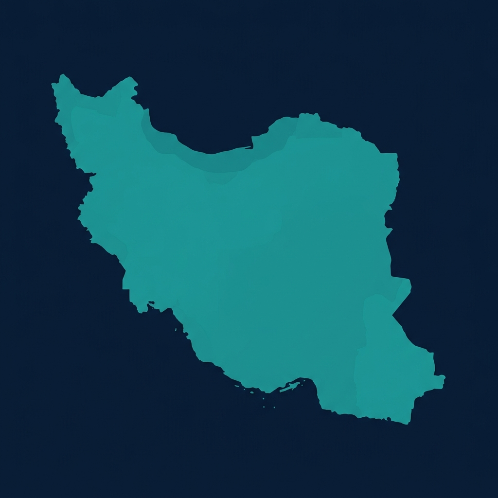
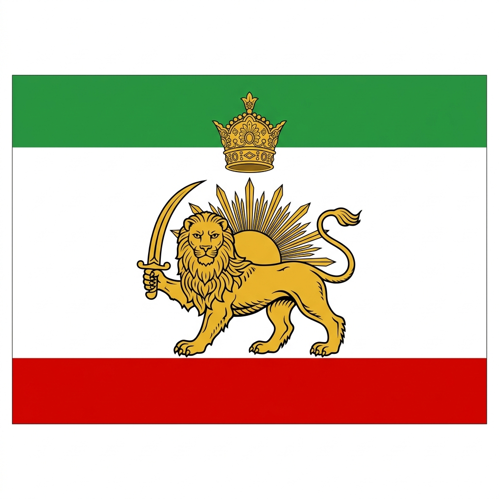

فرجاد پورمحمد
❤️ عاشق وطن
کارآفرین | استراتژیست استارتاپ | معمار سیستمهای هوش مصنوعی
🚀 «ساخت نرمافزارهای مرده را متوقف کنید، شرکتهای مقیاسپذیر بسازید»
من به بنیانگذاران در مراحل اولیه کمک میکنم تا کسبوکار خود را از صفر لانچ کنند، به تیمهای فنی و محصول مشاوره میدهم و سیستمهای هوش مصنوعی و اتوماسیون سفارشی مهندسی میکنم که واقعاً خروجی درآمدی و عملیاتی داشته باشند.
💡 تخصصهای کلیدی و سوابق کاربری
-
🏗️
راهاندازی کسبوکار از صفر تا یک: همکاری استراتژیک و فنی به عنوان همبنیانگذار برای طراحی ساختار اولیه محصول و استراتژی ورود به بازار (GTM).
-
🤖
طراحی سیستمهای هوش مصنوعی و اتوماسیون اختصاصی: جایگزینی فرآیندهای سنتی و دستی با سیستمهای نرمافزاری خودکارآمد و مبتنی بر مدلهای زبانی بزرگ (LLM).
-
🚀
ساخت و رشد استارتاپها
کمک به بنیانگذاران برای تبدیل ایده به محصول، محصول به بازار و بازار به کسبوکار مقیاسپذیر.
-
🤖
هوش مصنوعی و اتوماسیون
طراحی و پیادهسازی سیستمهای هوش مصنوعی، Agent ها و فرآیندهای خودکار که بتوانند بهرهوری، فروش و تصمیمگیری را در سازمانها متحول کنند.
-
🧠
استراتژی محصول و کسبوکار
همراستا کردن فناوری، بازار و مدل درآمدی برای ساخت محصولاتی که واقعاً مسئلهای را حل میکنند و مشتری حاضر است برای آنها پول پرداخت کند.
بیش از ۲۰ سال است که در نقطه تلاقی فناوری، کسبوکار و رفتار انسان فعالیت میکنم.
مسیر حرفهای من از برنامهنویسی و زیرساختهای فناوری آغاز شد، اما خیلی زود متوجه شدم که شکست یا موفقیت یک محصول، بیشتر از کدها به انسانها، تصمیمها و ساختارهای پشت آن وابسته است. به همین دلیل در کنار دنیای فناوری، مسیر مطالعاتی خود را در حوزه انسانشناسی دنبال کردم تا بتوانم فناوری را نه فقط از دید ماشینها، بلکه از نگاه انسانها درک کنم.
در طول این سالها چندین شرکت و استارتاپ را بنیانگذاری کردهام، تیمهای فنی و محصول متعددی را ساختهام و به صدها بنیانگذار، مدیر و کارآفرین برای تبدیل ایده به کسبوکار واقعی کمک کردهام.
امروز تمرکز اصلی من بر سه حوزه است:
در طول مسیر حرفهای خود با سازمانهای بزرگ، شرکتهای خصوصی، استارتاپهای نوپا، سرمایهگذاران و شتابدهندهها همکاری داشتهام و تجربه فعالیت در حوزههایی مانند سلامت دیجیتال، مهاجرت، فینتک، بلاکچین، آموزش، هوش مصنوعی و نرمافزارهای سازمانی را کسب کردهام.
«بیشتر کسبوکارها به دلیل کمبود فناوری شکست نمیخورند؛ به این دلیل شکست میخورند که بین انسان، محصول و بازار ارتباط درستی ایجاد نمیکنند.»
مأموریت من کمک به ساخت کسبوکارهایی است که این فاصله را از بین ببرند.
🌐 راههای ارتباطی و شبکههای اجتماعی
برای اطلاعات بیشتر و مقالات تخصصی، به وبسایت اصلی مراجعه کنید: farjadp.com